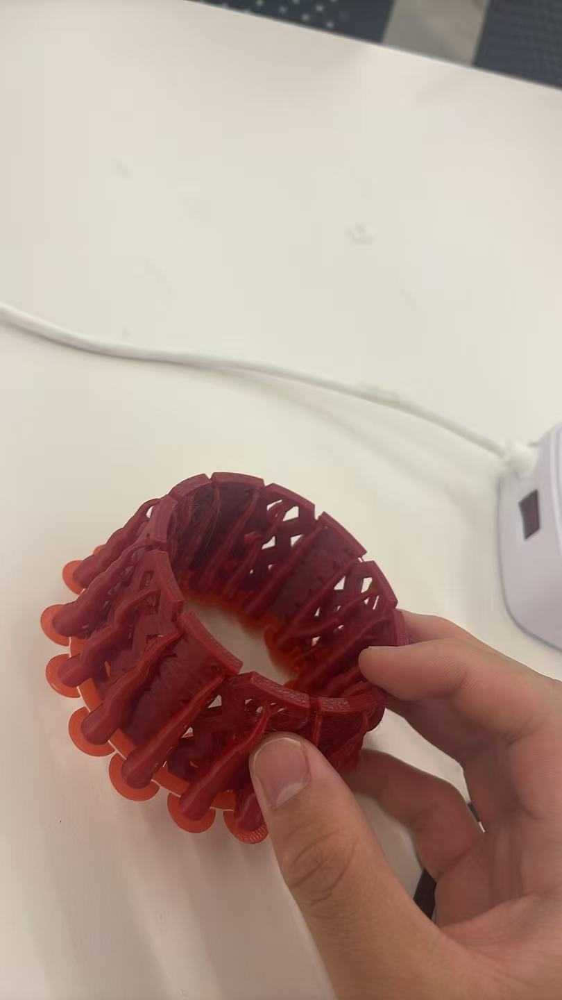
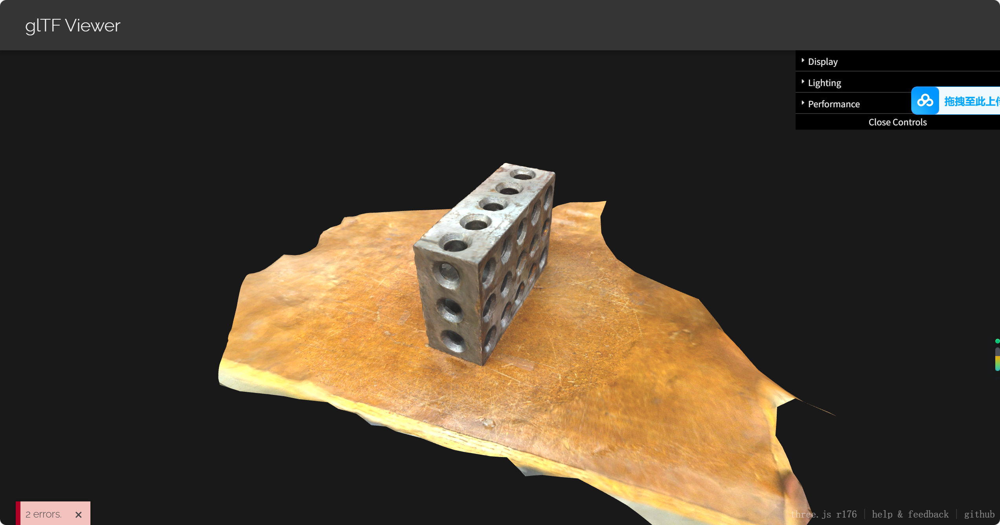

Weekly Lab Notes & Work
Task 1: Complex Perforated Cylindrical Test Structure 3D Printing
This hollow cylinder with repeating hexagonal cutouts is a complex geometry demonstration piece. Its continuous integrated lattice hollow structure cannot be easily manufactured via subtractive cutting or milling methods, which satisfies the assignment requirement for parts difficult to produce with removal manufacturing techniques.

Figure 1: Parametric CAD design of the hollow perforated cylinder inside Fusion 360, featuring repeating hexagonal ventilation cutouts.

Figure 2: Model placed on build plate within PrusaSlicer, 20% infill setting configured for lightweight rigid print.

Figure 3: Physical finished print of the perforated hollow cylinder after post-processing.
Task 2: Photogrammetry 3D Scan Task
I captured photos of the printed cylinder and generated a 3D mesh via photogrammetry software, exported as GLB format for 3D viewing.

Figure 4: Screenshot of the 3D scan processing interface showing mesh reconstruction.

Figure 5: Render preview screenshot of the complete scanned 3D geometry.
Downloadable Design & Scan Files
All required files for 3D printing and photogrammetry scan tasks are available for download:
Download Fusion 360 Source Archive (.f3d) Download Printable Mesh Model (.STL) Download Exported Sliced Printer G-code File Download Photogrammetry Scanned 3D Model (.glb)